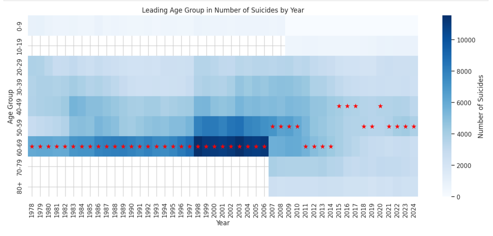
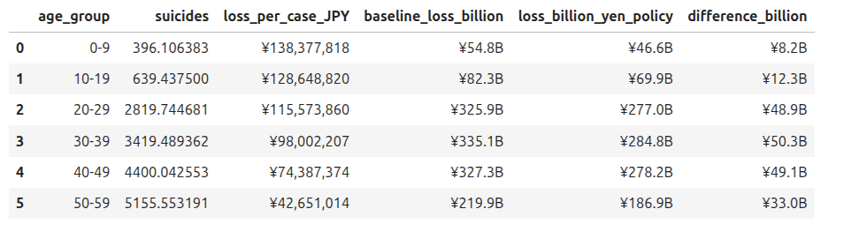

Summary
This project builds a complete, automated pipeline for Japan’s police suicide statistics.
It spans ingestion, data cleaning, cross-sectional analysis, time-series forecasting, and an economic loss model that simulates policy scenarios such as a 15 percent reduction in suicide rates.
The output is a decision-support tool for public health teams assessing where interventions are most cost-effective.
Situation
Japan publishes detailed suicide statistics, but raw data is fragmented across PDFs, HTML tables, and annual police reports.
Public health teams require a unified, analyzable dataset and interpretable outputs to evaluate trends and quantify economic consequences.
Task
Engineer a reproducible dataset, analyze demographic patterns, attempt forecasting across age groups, and quantify economic losses using lifetime productivity models.
Produce policy scenarios to demonstrate potential ROI of targeted interventions.
Action
- Data Engineering: web scraping, PDF extraction, Japanese era conversion, missing-value resolution, category normalization, and merge logic for age, gender, and reason-of-suicide data.
- Exploratory Visualization: demographic heatmaps, multi-year trends, and cross-analysis of age and cause categories.
- Modeling Attempts: Linear Regression, XGBoost, Prophet, and ARIMA for age-specific forecasting (limited performance due to sparse time series).
- Economic Modeling: lifetime earnings, tax revenue estimates, and discounted productivity loss per suicide case.
- Policy Engine: scenario simulations adjusting suicide rates and productivity, generating age-specific loss differentials.
Tools & ML Libraries
- Pandas, NumPy, BeautifulSoup4, Requests, PyPDF2
- Matplotlib, Seaborn
- Scikit-learn (Linear Regression), XGBoost
- Prophet, Statsmodels (ARIMA, SARIMA)
- Custom NPV-based economic loss modeling
Results
The pipeline consolidates more than two decades of demographic suicide data.
Economic modeling shows that working-age cohorts 20–59 generate the highest productivity losses, with middle-age brackets contributing over ¥300B annually.
A simulated 15 percent reduction in suicide rates produces multi-billion yen savings across all age groups.


Limitations
Age-specific forecasting remains statistically unstable due to short time spans and category volatility.
Further improvement requires either more granular data or hierarchical time-series models.
Explore
Quick links:
Open Report
Japan Police Statistics
View Code